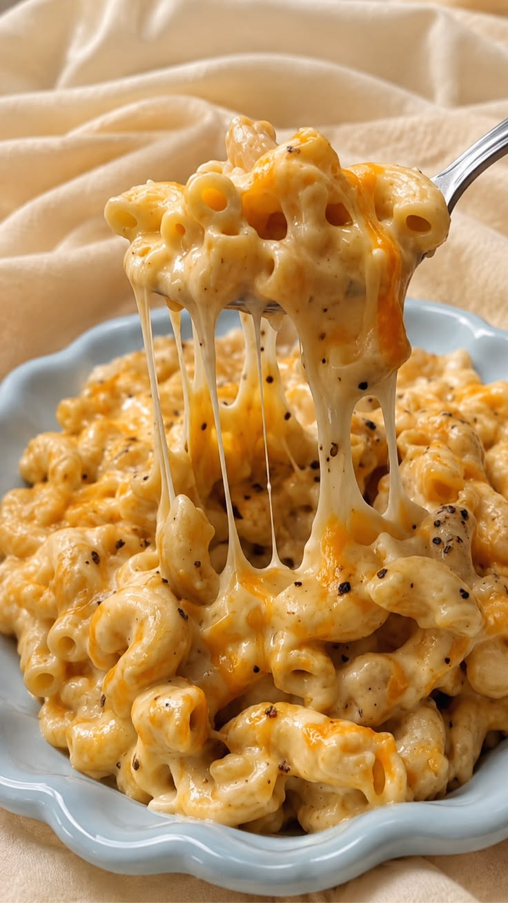

One-Pot Mac and Cheese
Creamy mac and cheese made in a single pot with no draining and no extra dishes.

Ingredients
- 1 cup of dry elbow macaroni
- 1 1/2 cups of milk (plus extra if needed)
- 1 cup of shredded cheddar cheese
Equipment
- Medium pot
- Wooden spoon
- Measuring cups
Instructions
- Put the macaroni and milk in the pot and bring to a gentle simmer on medium heat.
- Cook for 10 to 12 minutes, stirring often so the pasta does not stick, until the macaroni is tender. Add a splash more milk if it gets dry.
- Turn off the heat and stir in the cheese until melted and creamy.
- Add a pinch of salt and pepper, let it cool for a minute, and serve. Ask an adult to help with the stove.
Ingredient Notes
Contains wheat and milk. Stir often and keep the heat from getting too high, because milk can boil over quickly.
Make It Your Own
Add peas, cooked broccoli, or a sprinkle of paprika or breadcrumbs.
Team publishing task: test the recipe, add your own photo, and credit any outside recipe inspiration you use.